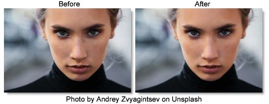

S_Beauty
Description
Applies smoothing, color correction, soft focus, and glow to skin regions.
The S_Beauty filter comes from the Emmy award winning Boris FX Sapphire filter set.
Category
Diffusion/Blurs.
Controls
Presets
To select a preset, pick one from the Presets window.
Skin Detection
Enable Skin Detection
Generates and internal mask of skin regions based on Skin Color, Luma and Chroma Range, etc.
Skin Color
Representative skin color to use during detection.
Luma Range
Difference in luma from Skin Color to consider skin.
Chroma Range
Difference in chroma from Skin Color to consider skin.
Rel Orange
Relative amount of orange in Chroma Range. The orange axis is along the human skin tone line common to all the human races, and is also known as the I-line in vectorscope terminology. Reducing this parameter can help eliminate blond or red hair (and similar highlights in other hair colors), some red/orange/yellow sports uniforms, warm backgrounds, etc. from the skin mask.
Rel Purple
Relative amount of purple in Chroma Range. The purple axis is perpendicular to the orange axis, and is thus most un-skin-like. In most cases, this parameter can be made smaller to eliminate lips, eyes, clothing, and jewelry from the skin mask. Increase this parameter to add purple and green shades to the skin detect mask, for example eye shadow, bad lighting, or alien skin tones (i.e. non-human).
Range Softness
Controls the softness of the skin detection mask. A value of one means only pixels that exactly match Skin Color will produce a mask value of one with each other pixel's mask value being proportional to its distance from Skin Color. A value of zero means a hard mask where all pixels within the luma/chroma range of the Skin Color will produce a mask value of one.
Clip White
Skin detection mask values greater than this value will be set to one.
Clip Black
Skin detection mask values less than this value will be set to zero.
Post Blur
Blur the skin detection mask by this amount.
Show
Selects the type of output.
Final
Show the final output.
Skin Detect Mask
Show the mask generated by the internal skin detector.
Skin
Show result of applying skin detection mask to source.
Show Color Helper
Display an interactive overlay to help set Skin Color, Chroma Range, Rel Orange, and Rel Purple. The overlay shows all possible colors that match the brightness (luma) of the Skin Color parameter. Orange is in the upper left corner, and purple is in the upper right (this orientation is similar to a traditional broadcast vectorscope). Colors matching the skin detection algorithm are highlighted. Changing Skin Color will move the highlighted region, adjusting Chroma Range changes the size of the highlighted region, and adjusting Rel Orange/Purple stretches the region along the diagonals of the square.
Suppress Background
Suppress BG
Only apply Beauty to the region specified by Face Center and related parameters.
Face Center
Center position of face region when Suppress BG is enabled.
Face Softness
Makes the face region softer when Suppress BG is enabled. This will provide a smoother transition from the face region to the background, but also possibly reduce the strength of Beauty in the face region.
Face Radius
Size of face region when Suppress BG is enabled.
Face Rel Height
Relative height of face region when Suppress BG is enabled.
Face Rotate
Rotation of face region when Suppress BG is enabled.
Show Face Widget
Display an interactive overlay to assist in placing and sizing the face region.
Pore Size
Features smaller than this size (pores, etc.) will be preserved even when blurring.
Blur Amount
Scales the width of the blur.
Edge Threshold
Color regions separate by an edge larger than this value will not blur into each other.
Soften Shadows
Positive values reduce the appearance of shadows, while negative values make shadows more pronounced. Reducing shadows can make the subject look younger, while darkening shadows will make them look older.
Shadow Thresh
Dark regions less than this value will be enhanced/reduced by Soften Shadows.
Reduce Shine
Darken bright, shiny areas. The darkening process can lead to a lack of color, and if so, use Shine Saturation to bring back a natural skin tone in the affected region.
Shine Saturation
Scales the color saturation in bright regions. Useful for adding a natural skin tone to shiny areas that required darkening.
Shine Thresh
Regions brighter than this value will be affected by Reduce Shine.
Color Correct
Hue Shift
Shifts the hue of the source colors, in revolutions from red to green to blue to red.
Saturation
Scales the color saturation of the result. Increase for more intense colors. Set to 0 for monochrome. You can also invert the chroma of the result by making this negative.
Brightness
Scales the brightness of the result.
Tint
Scales the result by this color, thus tinting the lighter regions.
Soft Focus
Scales the width of the soft focus blur.
Glow Brightness
Scales the brightness of the skin glow.
Glow Details
Glow Color
Scales the color the skin glow.
Glow Threshold
Glows are generated from locations in the skin regions that are brighter than this value. A value of 0.9 causes glows at only the brightest spots. A value of 0 causes glows for every non-black area.
Glow Width
Scales the skin glow distance.
Mix With Source
Interpolates between the blurred result (0) and the original source (1). 0.1 can give a nice misty effect since it mixes only a little of the source in.